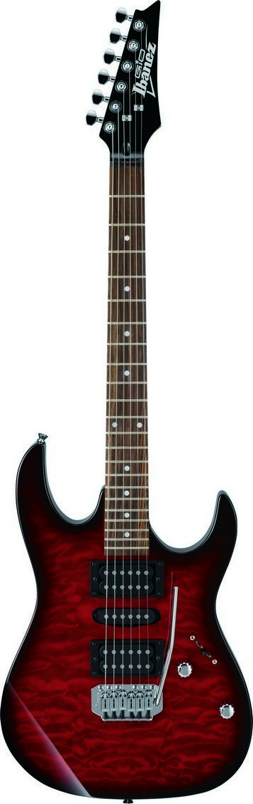
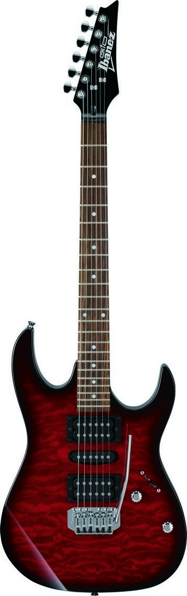

Электрогита́ра — струнный щипковый электрический музыкальный инструмент, разновидность гитары, имеющая электромагнитные звукосниматели, преобразующие колебания металлических струн в колебания электрического тока. Сигнал со звукоснимателей может быть обработан для получения различных звуковых эффектов и усилен — для воспроизведения через акустическую систему. Слово «электрогитара» возникло от словосочетания «электрическая гитара».